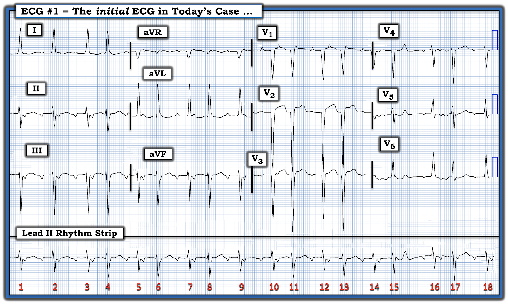
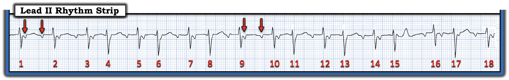
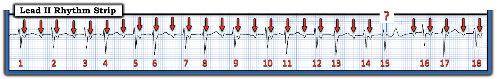
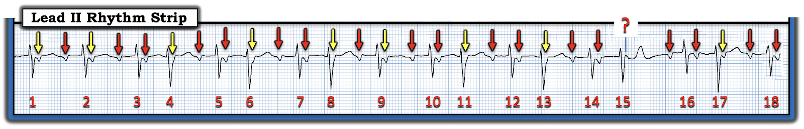
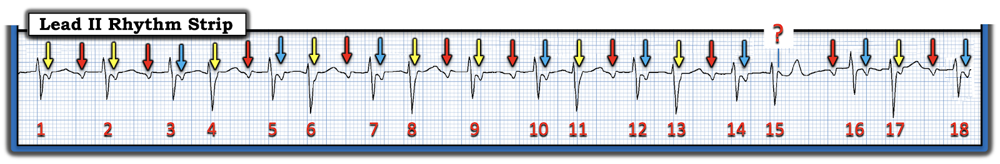
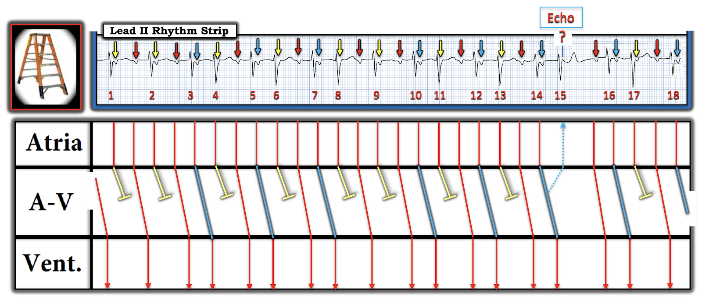
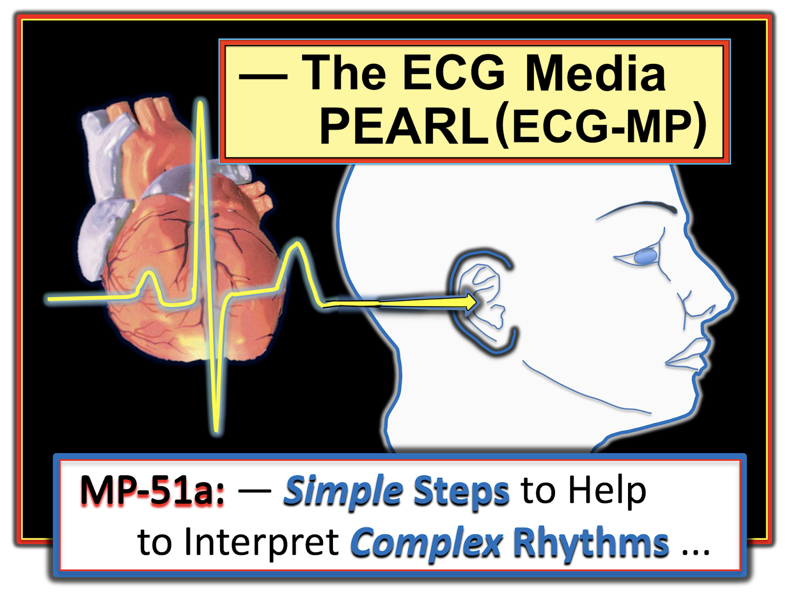

ECG Blog #370 — Một nhịp nhanh sau ngừng tim ...
Điện tâm đồ 12 chuyển đạo và dải nhịp chuyển đạo II dài trong Hình 1 — được ghi từ một phụ nữ lớn tuổi, trước đó khỏe mạnh, bị ngã quỵ tại bãi đỗ xe của bệnh viện.
- Bà được hồi sinh tim phổi vì VT/VFib — và đạt ROSC (tái lập tuần hoàn tự nhiên — Return Of Spontaneous Circulation) sau khử rung và điều trị bằng Epinephrine và Amiodarone.
- Một loạt rối loạn nhịp tim đã được ghi nhận trong quá trình hồi sức — bao gồm rối loạn nhịp thú vị thể hiện trên chuyển đạo II dài của Hình 1. Bệnh nhân ổn định huyết động với nhịp này.
CÂU HỎI:
- BẠN sẽ đọc điện tâm đồ 12 chuyển đạo của bệnh nhân này như thế nào?
- Đâu là nhịp tim thể hiện trên dải nhịp chuyển đạo II dài?


SUY NGHĨ CỦA TÔI về điện tâm đồ trong Hình 1:
Khi phải đọc một điện tâm đồ 12 chuyển đạo khó cùng một nhịp khó — tôi thích bắt đầu đánh giá bằng một cái nhìn nhanh vào nhịp. Xin nhấn mạnh — tôi không nhất thiết phân tích đầy đủ nhịp trong “lượt xem xét sơ bộ ban đầu” này — mà chủ yếu nhằm nhanh chóng nắm được liệu có cần điều trị ngay (như sốc điện chuyển nhịp) hay không.
- “Tin tốt” về ca hôm nay — là chúng ta được biết bệnh nhân ổn định huyết động với nhịp sau hồi sức thể hiện trong Hình 1.
- Nhìn nhanh cả 12 chuyển đạo — phức bộ QRS hẹp ở mọi nơi — điều này cho biết nhịp trong Hình 1 là nhịp trên thất. Dù vậy — hình dạng QRS có thay đổi nhiều, ở một số đoạn theo kiểu cách một nhát lại thay đổi (thấy rõ nhất trên dải nhịp chuyển đạo II dài).
- Tần số chung của nhịp trong Hình 1 là nhanh (tức trên 100/phút). Theo định nghĩa, điều này xếp nhịp vào một dạng SVT (tức là một dạng nhịp nhanh trên thất — SupraVentricular Tachycardia).
- Mặc dù nhịp không đều hoàn toàn — có một dạng “không đều có quy luật” (tức nhịp theo nhóm — group beating) thấy trên phần lớn dải nhịp chuyển đạo II dài, ở chỗ có các khoảng R-R ngắn-dài xen kẽ nhau. Vì phần lớn các nhóm trong Hình 1 có 2 nhát — nên có nhịp đôi (bigeminal rhythm) trên phần lớn dải nhịp này.
- Có một dạng hoạt động nhĩ! Nhìn phía trước mỗi khoảng R-R dài hơn (tức các khoảng R-R trước các nhát #2,3,5,7,9,10,12,14,16 và 18) — quả thật dường như có một sóng P với khoảng PR hằng định. Điều này cho biết ít nhất một số sóng P được dẫn truyền xuống thất. Dù vậy — sóng P trên dải nhịp chuyển đạo II dài không dương — nghĩa là cơ chế của nhịp hôm nay không phải là xoang.
XIN NHẤN MẠNH: Tôi thực sự đã trình bày "những suy nghĩ đánh giá" ở trên về nhịp hôm nay theo kiểu quay chậm! Khi đã có kinh nghiệm, việc áp dụng cách tiếp cận Ps, Qs, 3R (Xem ECG Blog #185) — để thực hiện các bước trên trong đánh giá ban đầu nhịp ở Hình 1 có thể (và nên) hoàn tất trong chưa đến 30 giây!
- ĐIỂM THEN CHỐT #1: Chỉ trong vài giây — chúng ta đã xác định rằng nhịp trong Hình 1 biểu hiện một dạng nhịp SVT kiểu nhịp đôi và không phải xoang, trong đó có hoạt động nhĩ — và trong đó ít nhất một số sóng P được dẫn truyền! Vì tần số tim ở mức nhịp nhanh (tức ≥100/phút), nhưng không quá nhanh — và vì bệnh nhân có ổn định huyết động — chừng đó là quá đủ cho "lượt xem xét sơ bộ ban đầu" về nhịp tim.
Còn điện tâm đồ 12 chuyển đạo thì sao?
Đến khoảng thời điểm này trong quy trình — tôi thích NHÌN kỹ hơn vào bản ghi 12 chuyển đạo, để bảo đảm không có thiếu máu cục bộ hay nhồi máu cấp cần được xử trí ngay.
- Như đã xác định — phức bộ QRS hẹp ở mọi chuyển đạo, nên nhịp là nhịp trên thất.
- QTc không kéo dài quá mức.
- Trục mặt phẳng trán lệch trái rõ rệt (tức chủ yếu âm ở mỗi chuyển đạo dưới). Điều này đủ tiêu chuẩn LAHB (blốc phân nhánh trái trước — Left Anterior HemiBlock).
- Có LVH (sóng R ở chuyển đạo aVL ≥12 mm — và có sóng S rất sâu ở các chuyển đạo trước). Ít nhất một phần tình trạng sóng ST-T dẹt ở các chuyển đạo bên có thể là hậu quả của "tăng gánh" thất trái (LV strain).
- Về thay đổi Q-R-S-T — các phức bộ QS có ý nghĩa chưa rõ thấy ở các chuyển đạo trước (có thể là nhồi máu cơ tim thành trước cũ) — tăng tiến sóng R có thể hơi chậm — và có thay đổi ST-T không đặc hiệu ở nhiều chuyển đạo — nhưng không có gì trông cấp tính! Vì vậy — chúng ta có thời gian để đánh giá nhịp hôm nay chi tiết hơn!
Đánh giá nhịp tim chi tiết hơn:
Nhận định "sơ bộ ban đầu" ngắn gọn của chúng ta về nhịp hôm nay — là trong Hình 1 có một dạng nhịp SVT kiểu nhịp đôi và không phải xoang, với một dạng hoạt động nhĩ ít nhất được dẫn truyền một phần.
- ĐIỂM THEN CHỐT #2: Nắm được các nguyên nhân thường gặp của nhịp đôi giúp nhanh chóng thu hẹp chẩn đoán phân biệt. Các nguyên nhân này được điểm lại trong ECG Blog #343. Trên thực tế — việc tần số nhịp trong Hình 1 tương đối nhanh, với nhịp theo nhóm trên phần lớn dải nhịp (với sự dẫn truyền của ít nhất những sóng P kết thúc các khoảng R-R dài hơn) — thu hẹp các khả năng nguyên nhân của nhịp hôm nay còn: i) Nhịp đôi nhĩ; hoặc, ii) Cuồng nhĩ hoặc nhịp nhanh nhĩ, với dẫn truyền Wenckebach giải thích cho nhịp theo nhóm.
- ĐIỂM THEN CHỐT #3: Đến đây — bước tiết kiệm thời gian nhất để giải nhịp hôm nay là xác định bản chất của hoạt động nhĩ. Việc này thực hiện DỄ nhất bằng cách dùng compa đo (calipers)! Chỉ cần đặt compa đo bằng khoảng P-P giữa bất kỳ 2 sóng P liên tiếp nào mà bạn thấy rõ. Chuyển sự chú ý từ Hình 1 sang dải nhịp chuyển đạo II dài — ta thấy rõ 2 sóng P liên tiếp trong khoảng R-R giữa nhát #1-2 — và giữa nhát #9-10 (mũi tên ĐỎ trong Hình 2).


Đánh dấu sóng P:
Khi đã đặt compa đo bằng khoảng P-P giữa 2 sóng P liên tiếp mà bạn thấy rõ — hãy thử "dò bước" khoảng P-P này trên toàn bộ phần còn lại của dải nhịp.
- Hình 3 cho thấy việc "dò bước" khoảng P-P đã xác định ở Hình 2 — cho phép ta xác nhận rằng, với 1 ngoại lệ (tức dấu ? sau nhát #15) — mỗi bước tiến của compa hoặc rơi đúng vào một biến dạng âm của hoạt động nhĩ, hoặc rơi vào trong một phần của phức bộ QRS, nơi một biến dạng âm "đúng lúc" có thể bị che khuất (mũi tên ĐỎ trong Hình 3).
Xác định nhịp nhĩ: Tính đều nhìn chung của hoạt động nhĩ, được làm nổi bật bởi các mũi tên ĐỎ trong Hình 3 — gợi ý có một nhịp nhĩ nền đều. Theo phương pháp Cách-Một-Nhát (Xem ECG Blog #210) — khoảng P-P của 2 sóng P liên tiếp trong Hình 3 nằm trong khoảng 3 đến 4 ô lớn — nghĩa là khoảng một nửa tần số nhĩ là ~85/phút X 2 = 170/phút cho tần số nhĩ ước tính.
- Như đã bàn — việc sóng P âm ở chuyển đạo II loại trừ cơ chế xoang cho nhịp trong ca hôm nay.
- Tần số ~170/phút sẽ là quá chậm đối với cuồng nhĩ – AFlutter (trừ khi bệnh nhân đang dùng thuốc chống loạn nhịp làm chậm dẫn truyền qua nút AV).
- Như vậy chỉ còn lại ATach ( = nhịp nhanh nhĩ — Atrial Tachycardia) — là căn nguyên khả dĩ nhất của nhịp trong Hình 3. Việc có sóng P âm ở chuyển đạo II — hoàn toàn phù hợp với một nhịp nhĩ lạc chỗ như ATach.


ĐIỂM THEN CHỐT #4: Khi một số thành phần của một nhịp phức tạp có vẻ khó diễn giải hơn — hãy để những thành phần đó lại sau cùng! Thay vào đó — đánh giá trước những thành phần ít khó hơn của nhịp sẽ tiết kiệm thời gian hơn nhiều. Sau khi làm vậy — lời giải cho những thành phần khó hơn đó thường trở nên dễ tìm ra hơn nhiều!
- Áp dụng nguyên tắc này, tôi bỏ qua phần cuối của nhịp hôm nay (tức những gì xảy ra sau nhát #14) — và thay vào đó, tôi tập trung vào 14 nhát đầu.
- ĐIỂM THEN CHỐT #5: Việc đơn giản là đánh dấu sóng P có thể vô cùng hữu ích để giải một rối loạn nhịp. Ví dụ, trong Hình 4 — tôi đánh dấu bằng mũi tên VÀNG những sóng P dường như có ít cơ hội dẫn truyền nhất, vì các sóng P này xuất hiện ngay sau phức bộ QRS. Làm vậy có giúp bạn nhận ra điều gì đang xảy ra với khoảng PR khi thấy 2 mũi tên ĐỎ liên tiếp không?


ĐIỂM THEN CHỐT #6: Cái thường gặp thì hay gặp. NẾU xét những gì đã xác định về nhịp hôm nay cho đến giờ — chúng ta biết rằng có một kiểu nhịp theo nhóm trên phần lớn nhịp SVT này, trong đó có một ATach đều nền với tần số ~170/phút (ít nhất trong 14 nhát đầu của bản ghi này).
- Hiện tượng nhịp theo nhóm, trong đó có một nhịp nhĩ đều nền — và mỗi nhóm nhát bắt đầu bằng một khoảng PR tương tự nhau — là đặc trưng của dẫn truyền Wenckebach.
- 2 nhịp SVT rất hay biểu hiện dẫn truyền Wenckebach là ATach và AFlutter. Đó là vì tần số nhĩ nhanh mà 2 rối loạn nhịp này đạt tới thường quá nhanh để có thể duy trì dẫn truyền AV 1:1. Vì vậy — tôi luôn nghĩ tới khả năng dẫn truyền Wenckebach mỗi khi thấy kiểu nhịp theo nhóm (dù ngắt quãng hay liên tục) — nhất là khi có một số khoảng PR giống hệt nhau ở đầu một số (hoặc tất cả) các nhóm.
Áp dụng ĐIỂM THEN CHỐT #6 cho nhịp trong Hình 4:
- Chẳng phải các khoảng PR trước nhát #2,3,5,7,9,10,12 và 14 đều bằng nhau sao?
CÂU HỎI: So với khoảng PR trước nhát #3,5,7,10,12 và 14 — điều gì xảy ra với khoảng PR trước nhát #4,6,8,11,13 và 15?
- GỢI Ý: Các mũi tên XANH LAM trong Hình 5 sẽ giúp trả lời câu hỏi này dễ hơn.


Tổng hợp lại tất cả:
Tập trung vào nhịp trong Hình 5, bắt đầu từ nhát #2:
- Sóng P âm có mũi tên ĐỎ phía trước nhát #2 được dẫn truyền với khoảng PR dài — nhưng mũi tên VÀNG xuất hiện ngay sau QRS của nhát #2 thì không được dẫn truyền.
- Tiếp theo là nhóm 2 nhát đầu tiên trên bản ghi này — gồm nhát #3 và #4. Sóng P mũi tên ĐỎ phía trước nhát #3 được dẫn truyền với khoảng PR bằng khoảng PR đứng trước nhát #2.
- Chẳng phải khoảng PR của sóng P mũi tên XANH LAM trước nhát #4 dài hơn khoảng PR của sóng P mũi tên ĐỎ trước nhát #3 sao? Và sau đó sóng P kế tiếp ( = mũi tên VÀNG gần như bị che khuất hoàn toàn trong QRS của nhát #4) không được dẫn truyền. Điều này phù hợp với một chu kỳ Wenckebach với dẫn truyền AV 3:2 ( = 3 sóng P, chỉ 2 phức bộ QRS được dẫn truyền = nhát #3 và 4).
- Sau nhát #4 — có một khoảng ngưng ngắn cho đến khi sóng P mũi tên ĐỎ trước nhát #5 khởi đầu chu kỳ tiếp theo với khoảng PR bằng khoảng PR của các sóng P mũi tên ĐỎ khác.
- Ngoại trừ những gì xảy ra với nhát #15 — một chuỗi sự kiện tương tự diễn ra trên toàn bộ dải nhịp chuyển đạo II dài trong Hình 5. Như vậy, có thể nói nhịp nền trên bản ghi hôm nay là ATach với tần số ~170/phút. Có dẫn truyền Wenckebach với tỉ lệ dẫn truyền AV 2:1 và 3:2 (dẫn truyền AV 2:1 ở nhát #2 và 9 — và dẫn truyền AV 3:2 ở các nhát #3,4; 5,6; 7,8; 10,11; 12,13; và 16,17).
Tại sao có 2 hình dạng QRS?
Tôi đã lưu ý ở trên rằng hình dạng QRS thay đổi nhẹ ở một số nhát trên bản ghi hôm nay. Cụ thể — QRS hơi rộng hơn và sóng S sâu hơn ở các nhát #4,6,8,11,13 và 17.
- Điểm chung của tất cả các nhát này — là chúng đều đi sau một khoảng R-R dài hơn, và có khoảng ghép ngắn với QRS đứng trước. 2 đặc điểm này (tức khoảng R-R đứng trước dài hơn — và khoảng ghép ngắn) — xác định những gì xảy ra trong hiện tượng Ashman, vốn tạo thuận lợi cho dẫn truyền lệch hướng. Như vậy, những nhát trông hơi khác này gần như chắc chắn phản ánh mức độ tăng lên của dẫn truyền lệch hướng kiểu LAHB (blốc phân nhánh trái trước — Left Anterior HemiBlock) (Xem ECG Blog #70 để ôn lại đầy đủ về hiện tượng Ashman).
GIẢN ĐỒ BẬC THANG (LADDERGRAM) minh họa nhịp hôm nay:
Tôi kết thúc ca hôm nay bằng Hình 6 — minh họa rối loạn nhịp của bệnh nhân này bằng giản đồ bậc thang (laddergram). Để rõ ràng — tôi dùng cùng màu để biểu diễn dẫn truyền qua Tầng Nút AV tương ứng với các sóng P được tô màu trên dải nhịp. Giản đồ bậc thang cho thấy:
- ATach nền với tần số ~170/phút.
- Các sóng P mũi tên ĐỎ được dẫn truyền với khoảng PR kéo dài nhưng hằng định.
- Các sóng P mũi tên XANH LAM được dẫn truyền với khoảng PR tăng nhẹ.
- Các sóng P mũi tên VÀNG không được dẫn truyền.
- Kết quả là có ATach với dẫn truyền Wenckebach 3:2 và 2:1 qua nút AV.


Vượt ra ngoài phần cốt lõi: Ngoại lệ = nhát #15
Diễn giải nhịp hôm nay là ATach với dẫn truyền Wenckebach AV 3:2 và 2:1 là quá đủ để hiểu và xử trí bệnh nhân này. Phần tiếp theo là một số khái niệm nâng cao dành cho những ai muốn hiểu thêm:
- Nhịp nhĩ đều trong ca hôm nay bị gián đoạn thoáng qua sau nhát #15. Tôi cho rằng lý do của sự gián đoạn ngắn ngủi này — là đã xảy ra một nhát dội (echo). Thay vì một biến dạng âm đúng lúc cho xung ATach kế tiếp — ta thấy một biến dạng dương ở dưới dấu hỏi xuất hiện ngay sau nhát #15.
- Tôi đã điểm lại khái niệm nhát dội (echo) trong ECG Blog #239. Đôi khi, lúc khoảng PR kéo dài — điều kiện có thể "vừa khớp" để cho phép dẫn truyền ngược dòng trở lại tâm nhĩ (tức tạo ra một nhát "dội" được "trả" ngược về tâm nhĩ). Vì các sóng P dẫn truyền xuôi trong nhịp ATach hôm nay âm ở chuyển đạo II — cực tính của nhát dội ngược dòng tạo ra một sóng P dương (các đường XANH LAM chấm chấm trên giản đồ bậc thang).
- Lý do có một khoảng ngưng nhẹ trong nhịp ATach — là sóng P ngược dòng (nhát dội) khử cực tâm nhĩ, tạm thời làm chậm xung nhĩ lạc chỗ kế tiếp.
- Hóa ra khoảng PR của sóng P mũi tên ĐỎ trước nhát #16 hơi ngắn hơn mọi khoảng PR mũi tên ĐỎ khác! Có lẽ lý do là khoảng R-R dài hơn giữa nhát #15-16 cho phép các đặc tính dẫn truyền của nhĩ hồi phục hoàn toàn hơn, nhờ đó sóng P trước nhát #16 được dẫn truyền xuống thất nhanh hơn một chút.
KẾT LUẬN CA BỆNH:
Tôi không có thông tin theo dõi chi tiết của ca hôm nay — ngoài việc biết rằng nhịp nhanh nhĩ đã được kiểm soát.
- Điểm MẤU CHỐT: Thay vì gọi rối loạn nhịp hôm nay là ATach với "blốc" AV độ 2 Mobitz loại I — tôi thích xem nhịp hôm nay là ATach với dẫn truyền Wenckebach. Kiểu đáp ứng Wenckebach này, có thể gặp trong nhịp nhanh nhĩ (hoặc cuồng nhĩ) — thường là sinh lý, do tần số nhĩ nhanh xảy ra trong các rối loạn nhịp này. Điều này thường không phản ánh một khiếm khuyết dẫn truyền cụ thể — và dẫn truyền Wenckebach thường tự hết khi ATach được kiểm soát.
==================================
Lời cảm ơn: Xin cảm ơn một bác sĩ lâm sàng ẩn danh đã chia sẻ ca bệnh và các bản ghi này.
==================================
PHẦN BỔ SUNG (ngày 24/3/2023):
- Các Audio Pearl dưới đây có thể giúp ích cho việc đánh giá ca hôm nay.


ECG Media PEARL #51a (7:40 phút Audio) — Các bước đơn giản giúp diễn giải những nhịp phức tạp.

ECG Media PEARL #54 (5:00 phút Audio) — Điểm lại nhát dội (Echo Beats) là gì — và ứng dụng lâm sàng của dấu hiệu điện tâm đồ này.
==================================
Các bài ECG Blog liên quan đến ca hôm nay:
- ECG Blog #185 — Điểm lại cách tiếp cận Ps, Qs & 3Rs để đọc nhịp một cách hệ thống.
- ECG Blog #210 — Điểm lại phương pháp Cách-Một-Nhát để ước tính tần số của các nhịp nhanh đều.
- ECG Blog #186 — Nhấn mạnh tầm quan trọng của Nhịp theo Nhóm — và điểm lại khi nào nên nghi ngờ blốc AV độ 2 ( = Wenckebach AV) thể Mobitz I.
- ECG Blog #188 — Điểm lại những điều cốt yếu để đọc (và/hoặc vẽ) Giản đồ bậc thang, kèm ĐƯỜNG LINK tới rất nhiều giản đồ bậc thang tôi đã vẽ và bàn chi tiết trong các bài blog khác.
- ECG Blog #343 — điểm lại các nguyên nhân thường gặp của nhịp đôi.
- ECG Blog #261 — Một ca ATach với dẫn truyền Wenckebach.
- ECG Blog #55 — Nhồi máu cơ tim thành dưới cấp + Wenckebach AV.
- ECG Blog #154 — Nhồi máu cơ tim thành dưới cấp + Wenckebach AV.
- ECG Blog #168 — Nhồi máu cơ tim thành dưới cấp + blốc Wenckebach (hai tầng).
- ECG Blog #224 — Nhồi máu cơ tim thành dưới cấp + Wenckebach AV.
- ECG Blog #240 — Điểm lại cách đánh giá chẩn đoán phân biệt của nhịp SVT đều.
- ECG Blog #229 — Tại sao AFlutter lại thường bị bỏ sót đến vậy?
- ECG Blog #137 — AFlutter với tỉ lệ dẫn truyền bất thường.
- ECG Blog #138 — AFlutter so với nhịp nhanh nhĩ.
- ECG Blog #40 — Một SVT đều khác hóa ra là AFlutter.
- González-Torrecilla và cs.: Ann Noninvasive Electrocardiol 16(1):85-95, 2011 — Điểm lại cách phân biệt AVNRT với AVRT và các nhịp SVT đều khác ở bệnh nhân không có WPW.
- ECG Blog #239 — Điểm lại khái niệm nhát dội (Echo Beats) (và cách nhát dội đôi khi có thể kết thúc một chu kỳ Wenckebach).
- ECG Blog #70 — Điểm lại hiện tượng Ashman.